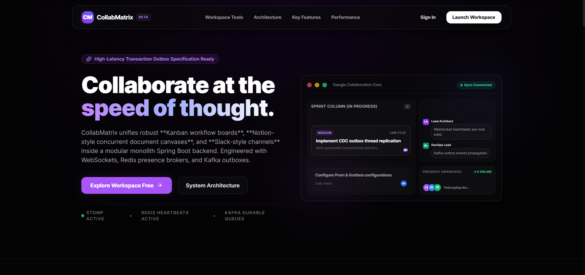

Hi, I'm Arbaz Sayyad
I build robust, scalable, and high-performance full-stack applications with Java, Spring Boot, and modern cloud technologies. Passionate about crafting clean architecture and delivering exceptional digital experiences.


Passionate Engineer.
Creative Problem Solver.
My journey into software engineering began with a profound curiosity about how complex systems work under the hood. As an MCA graduate from Savitribai Phule Pune University, I have dedicated myself to mastering the art of building scalable, high-performance web applications.
With over 2+ years of professional experience at AJ Techsoft, I specialize in the Java & Spring Boot ecosystem, architecting robust backend microservices and seamless cloud-native solutions on AWS.
Beyond code, I am driven by the impact of technology on real-world problems. Whether it's optimizing database performance by 40% or building AI-powered productivity tools, I strive for excellence in every line of code I write. My philosophy is simple: Build with purpose, code with passion.
Quick Highlights
Experience
2+ Years in SDE
Education
MCA - SPPU Pune
Core Tech
Java, Spring, AWS
Goal
Scale & Innovation
Me and
MyTech Stack
Seeking a challenging role that fosters growth, innovation, and impactful software development in a collaborative environment.


Featured Projects

AI Meeting Notes
Developed a high-performance meeting intelligence platform that automates transcription and summarization using Google Gemini AI. The system features asynchronous processing with Spring Boot and a dynamic React dashboard, enabling teams to capture actionable insights and reduce manual documentation effort by over 70% while ensuring secure data storage.

CollabMatrix - Collaboration Platform
Enterprise-grade real-time collaboration platform inspired by Jira, Notion, and Slack. Built with Spring Boot, React, Kafka, Redis, MongoDB, PostgreSQL, and WebSockets featuring CRDT-based collaborative editing, event-driven architecture, real-time synchronization, and distributed system scalability patterns.

Link-Magic - URL Shortener App
Engineered a premium URL shortening service with advanced analytics and a sleek "Midnight" design system. Built with Spring Boot and React, it offers custom short links, real-time click tracking, and geographic data visualization, providing users with a fast, secure, and highly scalable solution for managing their digital footprints.

Insurance Claims Processing
An enterprise-grade automation engine designed to streamline insurance eligibility determination through a complex rule-based workflow. Optimizes claim processing efficiency while ensuring strict adherence to regulatory compliance and data integrity standards.

Foodies - Online Food Delivery App
A robust full-stack food delivery platform integrated with Amazon services and Razorpay for seamless payment processing. Architected with Spring Boot and MongoDB to ensure high availability and efficient data management for 10,000+ potential users.

Memories App
A sophisticated social media ecosystem built on the MERN stack, facilitating real-time experience sharing through a secure JWT-authenticated environment. Features a scalable RESTful API architecture for seamless content delivery across distributed platforms.
Open Source
Contributing back to the developer community — bug fixes, features, and improvements to open projects.
Repository
spring-projects / spring-kafkaFixed checkstyle violations in RetryableTopicAnnotationProcessorTests to bring the test class into full compliance with Spring project coding standards. Resolved code style inconsistencies preventing clean builds, ensuring the contribution met DCO (Developer Certificate of Origin) requirements and passed maintainer review — improving long-term code quality and reducing CI friction for the team.
Repository
spring-projects / spring-kafka
Resolved a critical state-management bug in multi-partition batch listeners where
successful batches incorrectly cleared backoff states for other partitions. Implemented granular
state tracking in CommonErrorHandler and AfterRollbackProcessor to
ensure independent recovery cycles and reliable Dead Letter Queue (DLQ) delivery.
Repository
spring-projects / spring-framework
Contributed documentation to the Spring Framework clarifying transaction synchronization
behavior when multiple DataSourceTransactionManager instances share the same
DataSource, ensuring consistent resource-keyed synchronization across complex configurations.
Repository
spring-projects / spring-frameworkEnhanced the WebFlux ModelAttributeMethodArgumentResolver by exposing key validation methods as protected extension points. This enables developers to implement custom validation logic in reactive applications.
Professional Experience
Software Engineer
AJ Techsoft Pvt. Ltd.
- Designed and developed RESTful APIs using Spring Boot for enterprise applications serving 10,000+ users.
- Implemented microservices architecture, improving system scalability and reducing deployment time by 40%.
- Integrated third-party APIs, improving user engagement by 20%.
- Improved MySQL query performance, reducing execution time by 40%.
- Integrated AWS services (EC2, S3, IAM) for cloud deployment and secure data storage.
- Increased test coverage to 85% using JUnit, reducing production bugs.
- Collaborated with cross-functional teams in Agile/Scrum methodology to deliver features on schedule.
Software Development Intern
AJ Techsoft
- Developed and maintained Spring Boot applications.
- Improved front-end UI with React.js, boosting user experience by 25%.
- Built and consumed RESTful APIs for seamless frontend-backend communication.
- Assisted in the development of RESTful APIs, enhancing data exchange efficiency.
- Participated in code reviews and followed best practices for clean, maintainable code.
- Gained hands-on experience with Git version control and CI/CD pipelines.
- Implemented unit tests using JUnit, improving test coverage by 20%.
My Education
Master of Computer Applications
Savitribai Phule Pune University
- Focused on Data Structures, Algorithms, Object-Oriented Programming, and Database Management Systems
- Studied fundamentals of Artificial Intelligence and Machine Learning.
- Completed major project on Insurance Claim Processing System using Java and Spring Boot
- Participated in coding competitions and technical workshops
Bachelor of Computer Applications
Savitribai Phule Pune University
- Studied Fundamentals of Computer languages, and Statistics with a focus on analytical problem-solving
- Developed a strong foundation in logical reasoning and scientific thinking
- Completed project on Ecommerce Platform using Java, JDBC and Servlet
Research Publications
A Study on Awareness About Cybercrime Among Students
This research evaluates college students' awareness of cybercrime, identifying knowledge gaps and vulnerabilities. The study, based on data from 50 students in Narhe, Pune, highlights the need for enhanced online safety practices and better crime reporting mechanisms. The findings emphasize the importance of cybersecurity education and legal measures to mitigate cyber threats.
Keywords: Cybercrime, Cybersecurity, IT Superpower, IT Act, Awareness
A Study Towards Customer Perception on E-Commerce
This paper explores consumer preferences for online vs. offline shopping in Narhe-Pune. The study, published in the International Journal of Novel Research and Development, analyzes data from 40 respondents, highlighting satisfaction with e-commerce due to economic benefits and convenience. However, concerns around return policies and product quality remain. The research suggests improvements in security, return processes, and quality assurance to enhance the online shopping experience.
Keywords: E-commerce, Consumer Behavior, Online Shopping, Digital Marketplace
Contact Me
Let's build something extraordinary together.
I'm always open to discussing new projects, creative ideas, or opportunities to be part of your vision. Feel free to reach out!
GitHub
github.com/Arbaz4SayyadLocation
Pune, Maharashtra, India